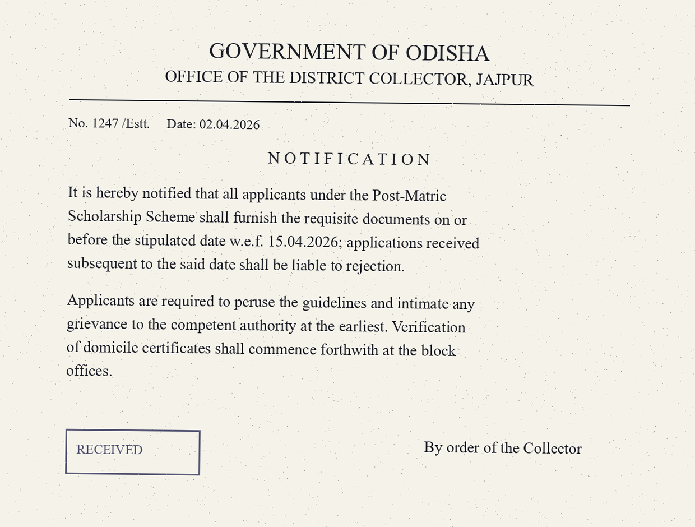

Income Certificate
Apply online for an income certificate. Processing time: 15 days. Applications from persons with disabilities are given priority.
District Administration
Committed to peace, prosperity and equality.
Jajpur is a historic district on the northern bank of the Brahmani river. This portal is the single official gateway to all services of the district administration — certificates, grievance redressal, disaster notifications and disability welfare schemes.
Citizens can apply online, track the status of an application, and access most services without visiting an office.
Apply online for an income certificate. Processing time: 15 days. Applications from persons with disabilities are given priority.
Required for school admissions and scholarship applications.
SC / ST / OBC certification issued by the Tahasildar. The list of required documents is available in Odia and English.
Under the National Food Security Act, add or remove family members, change address, or apply for a new ration card.

Under the SSEPD department (State Social Security and Empowerment of Persons with Disabilities), Jajpur district administration runs the Madhu Babu Pension Yojana, UDID disability-card camps, and accessibility retrofit work in public buildings.
Services for persons with disabilities in the district include the Madhu Babu Pension Yojana, UDID card camps, and accessibility arrangements in public buildings.
Helpline: 06728-222333 · Email: sspd-jajpur@odisha.gov.in